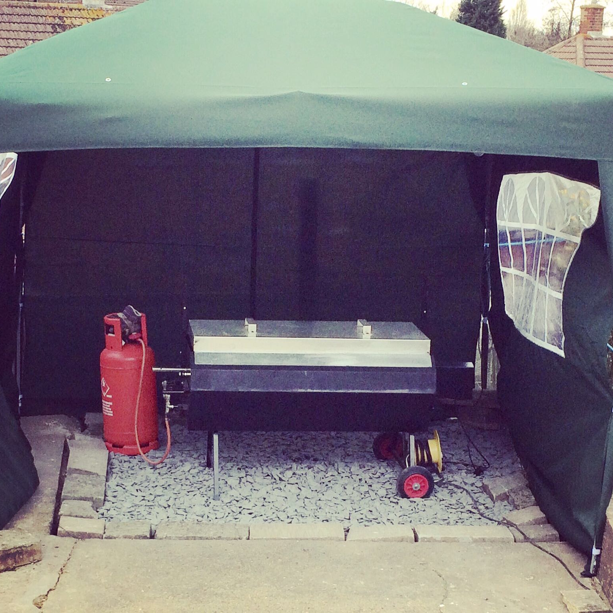
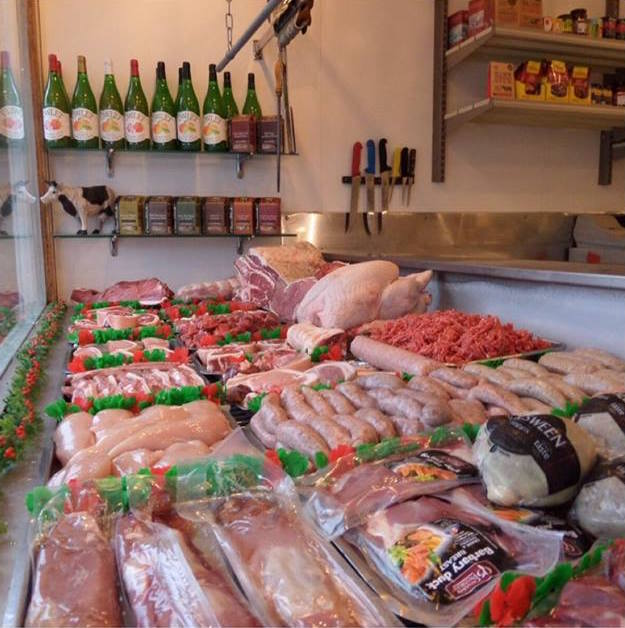
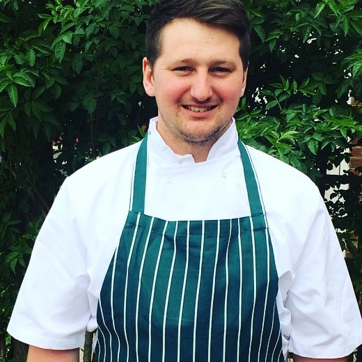

Affordable Prices

Catering for a large number of guests can be expensive, but our hog roast is a cost-effective way of feeding everyone whilst also providing a feature at your event which will truely impress your guests. Sticking to a budget can be difficult and this is why we will provide you with a complete breakdown of our services before any dates are set and payments taken.
Premium Produce

All of our locally-sourced, high-quality produce comes from P W Copus Butchers. They are based at 72 Western Road, Borough Green, Kent, TN15 8AH. We work alongside P W Copus Butchers so please feel free to pop into the shop at any time to enquire about the meats on offer. There is also the option to hand select the type of meats you would like at your hog roast or BBQ event.
Excellent Service

A high-quality, personal and professional experience is something that is guaranteed when you book with us. From the moment you contact us, a member of the team will walk you through all the options available whilst making sure that the package you are paying for is perfect for your event. If required we can liaise with your venue/events company to ensure your day runs smoothly.